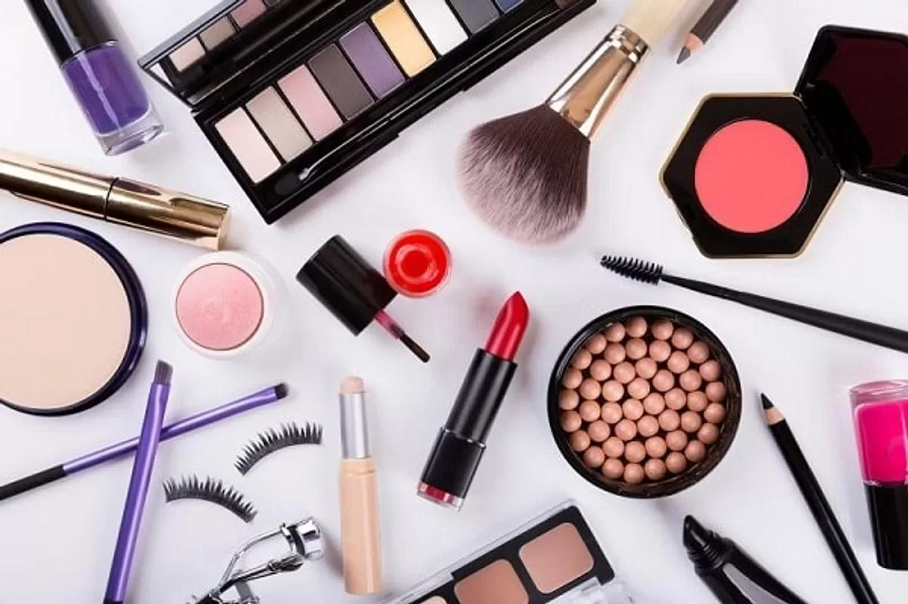

Em nosso site, a maquiagem se transforma em uma verdadeira forma de arte, onde cores vibrantes, texturas inovadoras e uma dose de criatividade se encontram para criar looks inesquecíveis. Cada pincelada é uma expressão única, cada tonalidade revela uma nova possibilidade, e cada acabamento traz à tona uma personalidade única. Se você busca se reinventar, explorar novos estilos ou simplesmente aprender mais sobre as tendências e técnicas da maquiagem, aqui é o lugar perfeito para liberar sua imaginação e mergulhar nesse universo de cores e formas.

Cada maquiagem é uma forma de expressão única, um reflexo das inúmeras possibilidades que a arte da beleza oferece. A diversidade de estilos presentes nesta imagem é um convite para explorar sem limites, quebrar barreiras e criar looks que vão desde os mais sutis até os mais ousados. As texturas, os brilhos e as cores, que vão do clássico ao vibrante, têm o poder de contar histórias diferentes a cada aplicação. Seja para o dia a dia, uma ocasião especial ou uma transformação completa, a maquiagem tem a capacidade de ressaltar traços, criar efeitos visuais impactantes e até mesmo mudar a forma como nos vemos no espelho. As escolhas são infinitas, e a beleza de tudo isso está na liberdade de criar e se reinventar a cada nova combinação. Inspire-se nas diversas possibilidades mostradas aqui, pois a maquiagem é mais do que uma técnica – é um caminho para a autodescoberta e para a celebração da individualidade.